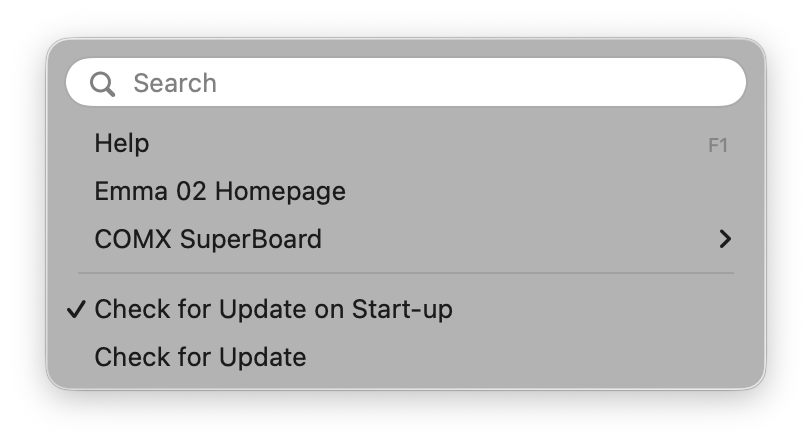

Open the Emma 02 help pages.
Open the Emma 02 homepage.
Two submenu items provide direct links to the COMX SuperBoard homepage and the high score page.
At start-up, Emma 02 will check if a newer version is available. This only works if an internet connection is available.
To disable the start-up check, uncheck this menu item.
Check manually for updates.